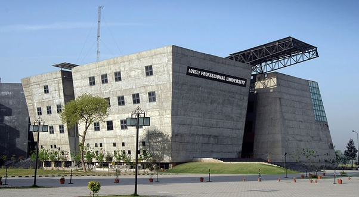

| |
HOME SERVICE EMERGENCY DOCTORS APPOINTMENT ABOUT US CONTACT US |
| |
HOME SERVICE EMERGENCY DOCTORS APPOINTMENT ABOUT US CONTACT US |
|
Welcome to Uni Hospital Best Medical & Health care Needs to Our Patients The Uni Hospital lpu is open to all patients round the clock every day and provides fundamental medical care. We use our superior academic knowledge to treat a wide range of health issues, taking a personal touch and utilizing highly specialized and up-to-date research. Broad and specialized range of services Each year, we treat around 30000+ patientsOur employees guarantee comprehensive and individualized medical support even beyond their specific disciplines. This hospital has about 100+ hospital beds. Team diversity More than 500 employees work at the University Hospital of lpu. They include 50 doctors, 250 highly trained nursing professionals and 200 other staffs. With 5 ambulance 24X7 ready for emergency |
 |